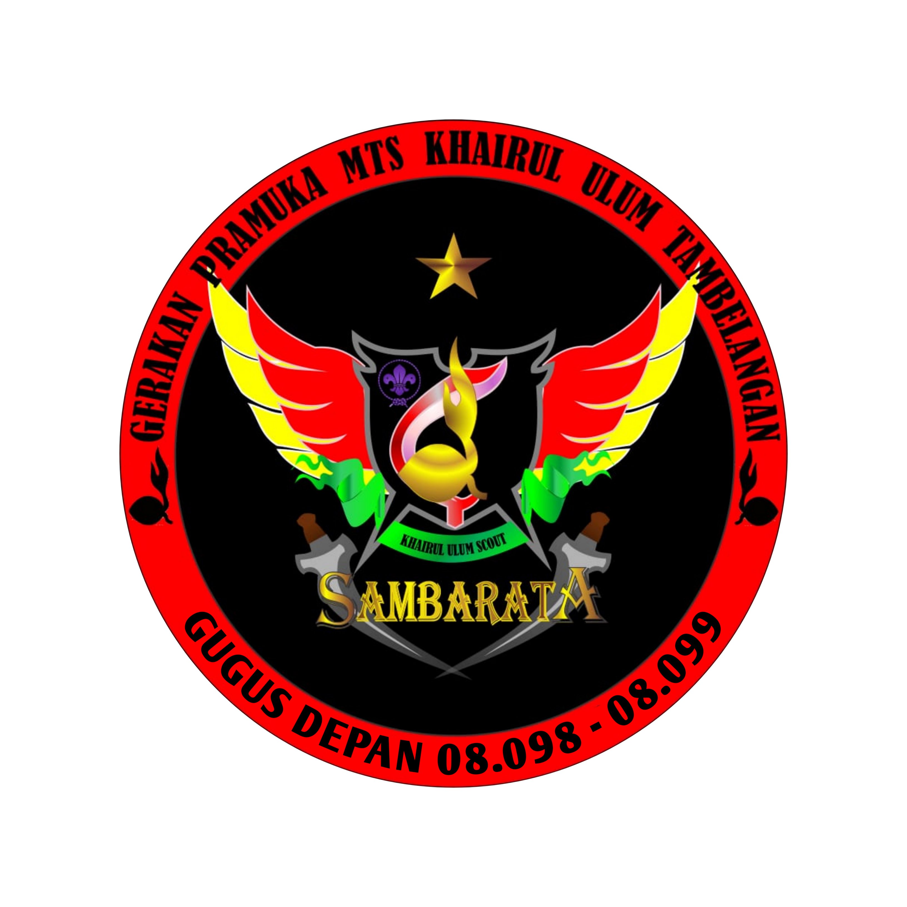

SAMBARATA SCOUT KHAIRUL ULUM
Gerakan Pramuka Khairul Ulum merupakan gugus depan yang berlokasi di Jalan Raya Tambelangan, Kecamatan Tambelangan, Kabupaten Sampang, Jawa Timur, dengan Gugus Depan Putra bernomor 08.099. Dikenal dengan nama Sambarata Scout, yang merupakan kepanjangan dari ( Satria Muda Barometer Pramuka Tambelangan ).
MOTTO PASUKAN
Beda Langkah, Satu Arah.